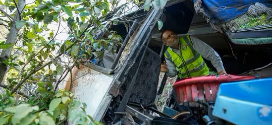

In the age of social media, celebrities wield immense influence, capable of directing the world's attention to crucial issues with a single post. Recently, Instagram was flooded with the hashtag #AllEyesOnRafah, as high-profile celebrities shared their outrage over the Israeli attack on Gaza's Rafah, a supposed safe zone where many innocents were killed. The campaign garnered over 40 million shares, becoming a global phenomenon. Yet, when a similar tragedy struck closer to home in India, these same celebrities remained conspicuously silent, exposing a glaring hypocrisy that has left many questioning the sincerity of their activism.
On a quiet Sunday evening, a bus carrying pilgrims from the Shiv Khori temple to Katra in Jammu and Kashmir was attacked by terrorists. The bus veered off the road and fell into a gorge, resulting in the deaths of 10 people and injuring 33 others. The victims, who were returning from a spiritual journey, found themselves caught in a deadly act of terrorism. This horrific incident should have sparked widespread outrage and calls for justice, especially from those who had so passionately advocated for the innocent lives lost in Rafah.
TIn the wake of the Reasi attack, a new hashtag began to emerge: #AllEyesOnReasi. However, the Indian celebrities who had vocally supported #AllEyesOnRafah were notably absent from this new campaign. Their silence was deafening and did not go unnoticed by the public. Many speculated that the celebrities who championed the cause of Rafah might have been motivated by external influences or monetary incentives. This suspicion only grew as these public figures failed to acknowledge the tragedy that had befallen their own country.
The stark contrast in reactions raises significant questions about the authenticity of celebrity activism. How can these influential figures rally the world to mourn and protest for foreign victims, yet remain indifferent when their compatriots suffer a similar fate? Is it selective empathy or a strategic move influenced by external factors?
Several prominent Indian celebrities had shared emotional posts about the Rafah incident, urging their followers to pay attention to the plight of innocents caught in conflict. Their voices were loud and clear, resonating across social media platforms. Yet, the Reasi attack, which struck at the heart of their own nation, was met with silence. This discrepancy suggests a troubling trend where celebrity activism is guided more by trends and possible incentives than genuine concern for human suffering.
The public was quick to notice this inconsistency. Social media users expressed their frustration and disappointment, questioning the integrity of these celebrities. Hashtags like #AllEyesOnReasi began trending, but without the endorsement of high-profile figures, the movement struggled to gain the same momentum as #AllEyesOnRafah.
Media plays a crucial role in shaping public opinion and directing attention to significant issues. When celebrities use their platforms to highlight certain causes, they have the power to mobilize millions. However, this power comes with a responsibility to be consistent and authentic. Selective outrage not only diminishes the impact of their activism but also erodes public trust.
The disparity in reactions to the Rafah and Reasi incidents highlights a need for more genuine and consistent activism from celebrities. True advocacy means standing against injustice and violence wherever it occurs, regardless of geopolitical considerations or potential incentives. Celebrities must use their platforms to advocate for all victims of violence and terrorism, not just those whose stories are trending or politically expedient.
The silence of Indian celebrities in the wake of the Reasi attack is a stark reminder of the inconsistencies in celebrity activism. While the world rallied behind the innocents of Rafah, the tragedy in Reasi failed to receive the same level of attention and outrage from those who could have made a difference. As public figures with significant influence, celebrities have a duty to advocate for justice universally, not selectively. The #AllEyesOnReasi campaign serves as a call to action for more genuine, consistent, and unbiased activism in the fight against terrorism and violence.
"Truth Uncovered, Reality Restored."